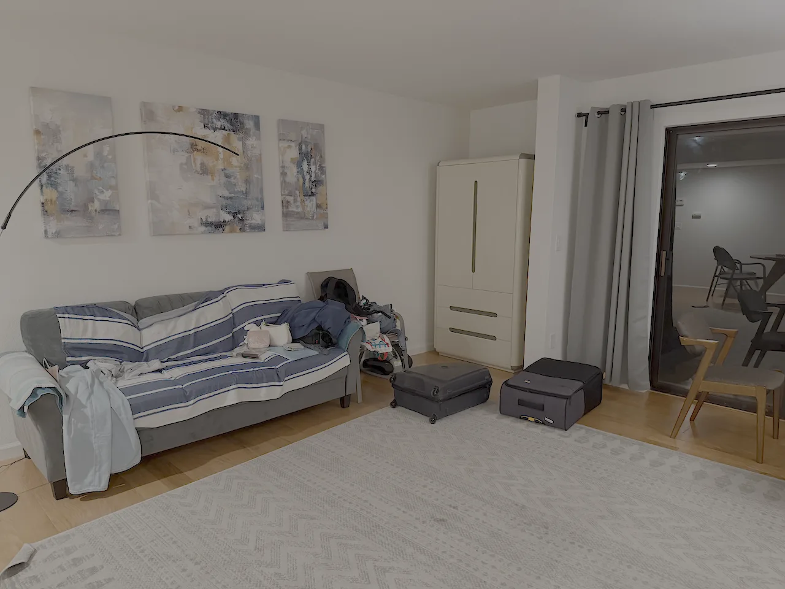
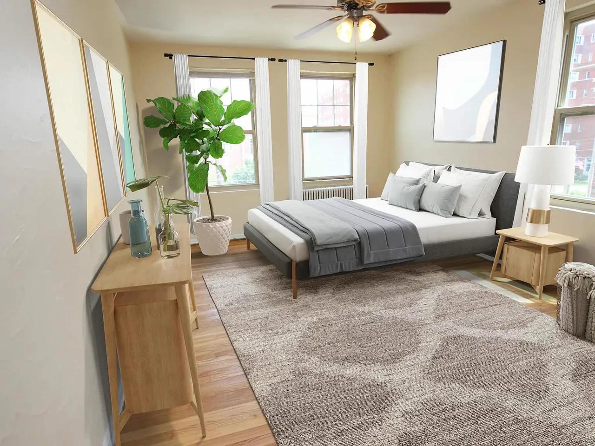
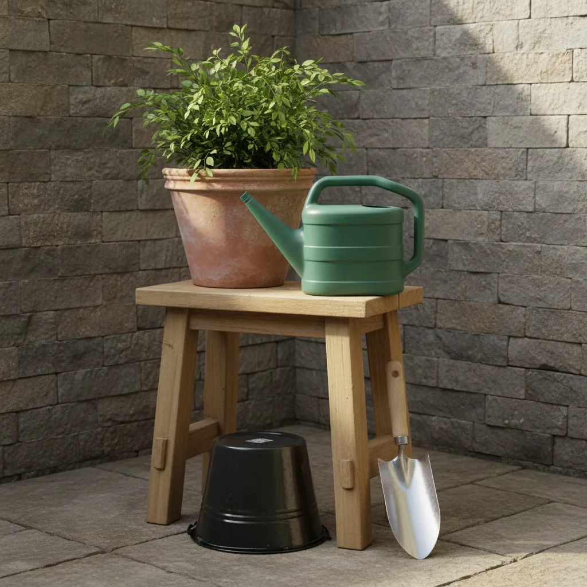
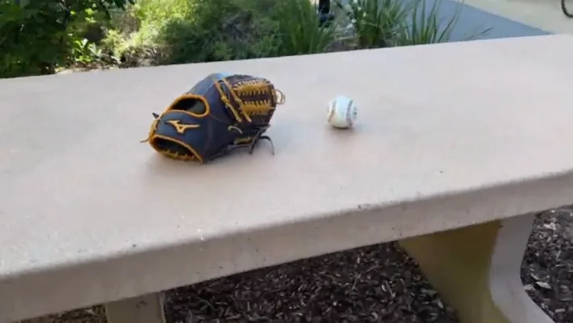
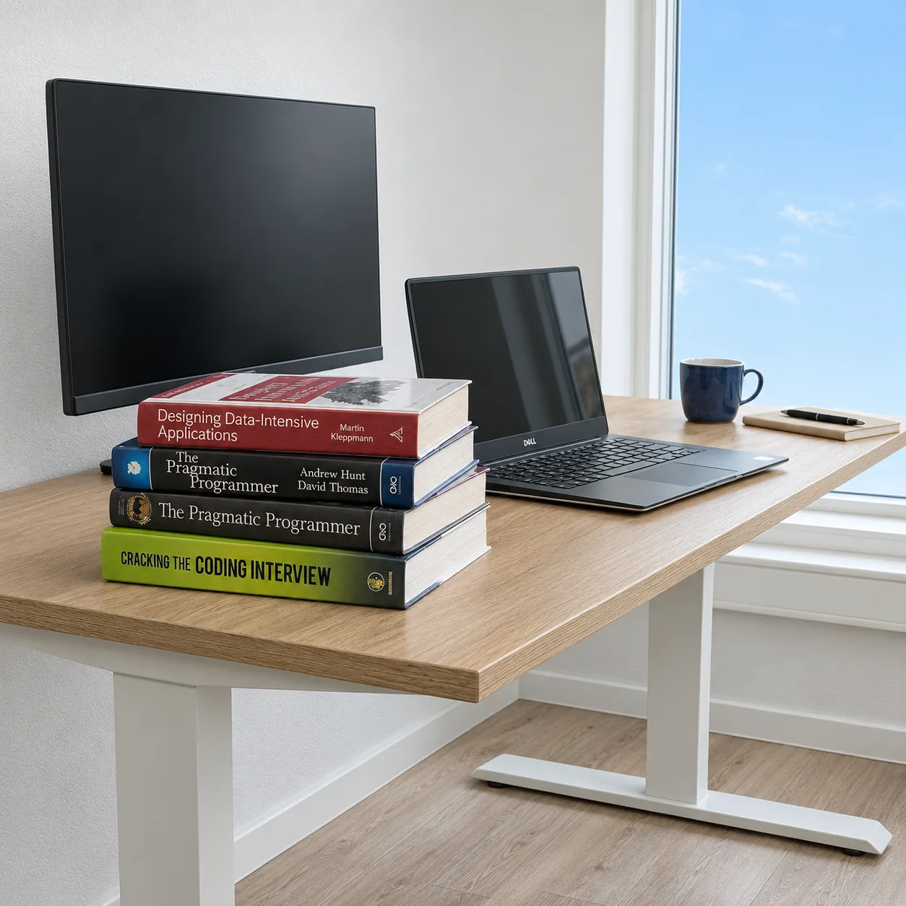
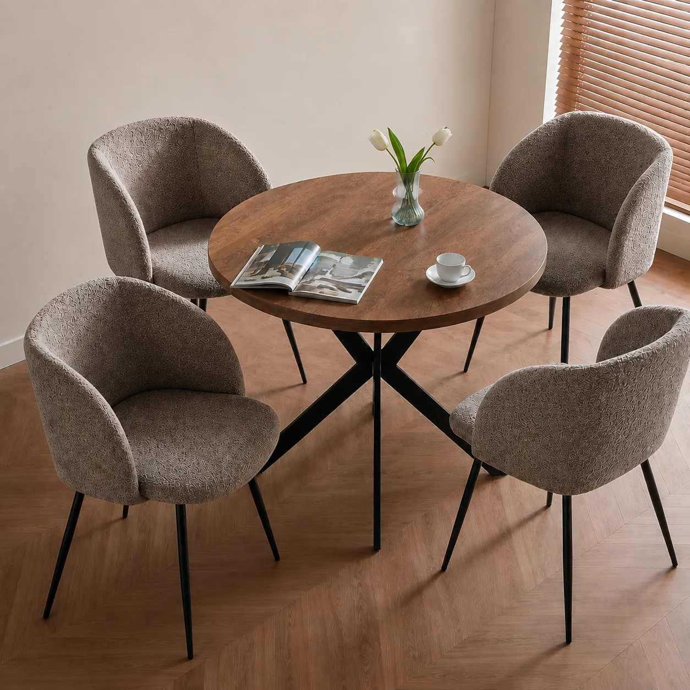
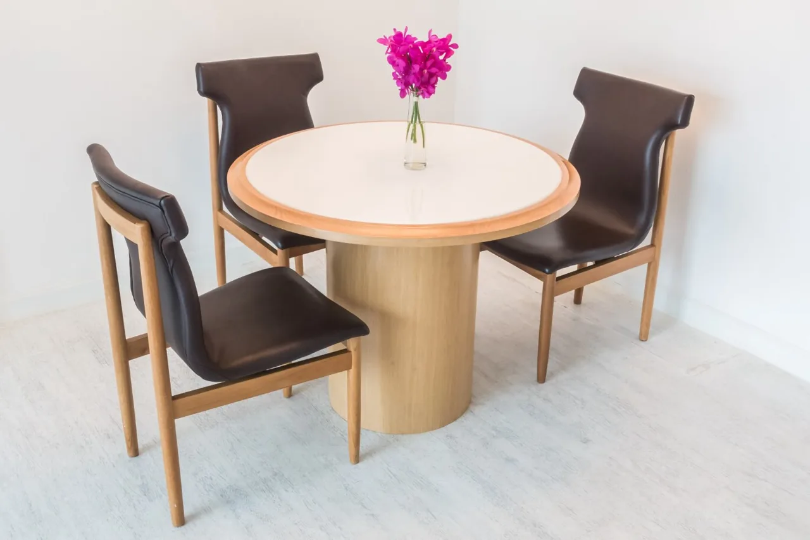

Question: How does SceneRig handle scenes beyond tabletops?
SceneRig is designed for tabletop scenes for robot manipulation. Examples 1–5 are images outside our benchmark, two of them rooms: one is our own photo, and four come from related papers. Examples 6–7 are dining scenes from our benchmark. Furniture and objects are recovered, but in rooms, textiles such as blankets are segmented as separate objects and reconstructed as rigid meshes, so they can look unnatural.
Each 3D viewer opens at the input camera; drag to orbit, scroll to zoom, and right-drag to pan. The viewer uses neutral lighting, so shading differs from the photo; walls between the camera and the scene are hidden while orbiting.
Example 1: Living room · our own photo
The sofa, cabinet, rug, suitcases, bags, chairs, and floor lamp are recovered. The throws on the sofa become rigid meshes, and the paintings on the wall are not reconstructed.

Example 2: Bedroom · input from REST3D
The bed, pillows, side tables, lamp, plants, and rug are recovered. The folded blankets at the foot of the bed are segmented as separate objects; reconstructed as rigid meshes, one sticks up as a stiff slab instead of lying flat on the bed.

Example 3: Garden stool · input from φ-Scene
An outdoor scene: the potted plant and watering can on the stool, and the bucket and trowel below it, are recovered.

Example 4: Glove and ball on a bench · input from SimFoundry
A real outdoor photo: the glove and ball are recovered on the bench.

Example 5: Desk · input from SimuScene
The monitor, laptop, stacked books, mug, and notebook are recovered on the desk.

Example 6: Round dining table · from our benchmark
The table, four upholstered chairs, vase, open book, and cup are recovered; the chairs' fabric appears darker than in the photo.

Example 7: Pedestal table · from our benchmark
The pedestal table, three leather chairs, and the vase of flowers are recovered.
